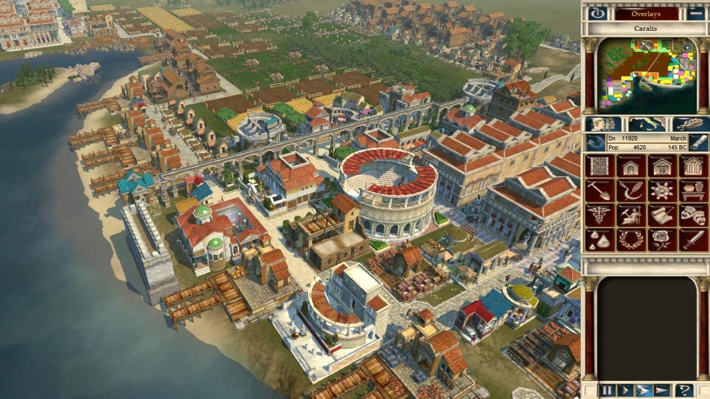

Like Michelin, This Digital Content Marketer for Star Top models

Michelin was the first company to do content marketing by designing and publishing guides that could help car drivers find, restaurants, repair places, and gas stations because at that time the world had not a working geo satellites constellation that could fuel applications like google map. That’s was a clever way to keep expose Michelin’s brand to drivers that would for sure one day need tires. By pivoting to bicycles from tires, Michelin created a new market () by reengineering the way they were built to make it possible for the drivers to change them for themselves or by an unqualified mechanical engineer like me.
Rendre a Cesar ce qui apartient a Ceasar.

Who knows me knows that I am not so compliant with this country which stopped administratively my past promising entrepreneurial journey in 2011. I was not at that time happy about how Foreign students were considered worse if they had a religious belief like mine. But I knew that it was the system that was made like that but Frenchies, women, and men, are socially very empathic to others' pains and very kind. That was my point of view and I always thanked those who helped me and there were many of them with a different political point of view and very very very often having a different religious belief than me. I think, I also was very empathic to them even if I knew that there was a bug in the french immigration system like those I was intended to fix for those quantitative engineers, traders, and analysts who I often provided investment funnels and arbitrage systems. I have not given my opinion to this analyst that had a bad opinion about Ubisoft that I knew was a great game studio and publisher that I was taking as a french one. From breakfast to diner, they, mainly non-profit volunteers and devoted Catholics helped this homeless entrepreneur I ended being. At that time I knew for sure How a big engineering company Michelin was because of this entry field of mechanical engineering I did but that I minored in front of my interest in computer science, software engineering, and IT. Computers connected me to banking which deepened my tech knowledge while introducing me to the power and importance of financial engineering….
I think it’s enough about me, just I also knew that Michelin guide was a very known and respected guide still at that time.
Amazing how good ideas can have a long lifetime, Michelin still benefits from this marketing artifact.
Luxury brands and their top models are not exploiting very well the potential of online content marketing like Michelin did with print marketing which also is content marketing. Exploring the possibilities for this game about brand helped me clearly see this opportunity that you can exploit if like me you are a content marketer but for my part, I am not interested in doing that. Users networks are the kind of business model that I am most interested in Content tSunami had this kind of business model and these ones also.
I don’t know what’s the matter with me today because it is more about me than great ideas. Apologies
PS: Loved playing Ceasar and Age of empire when I was young because I like most simulation games but am actually working in RPG and MMO ones and my understanding of simulation genre and systems help me build better AI NPCs and environment.